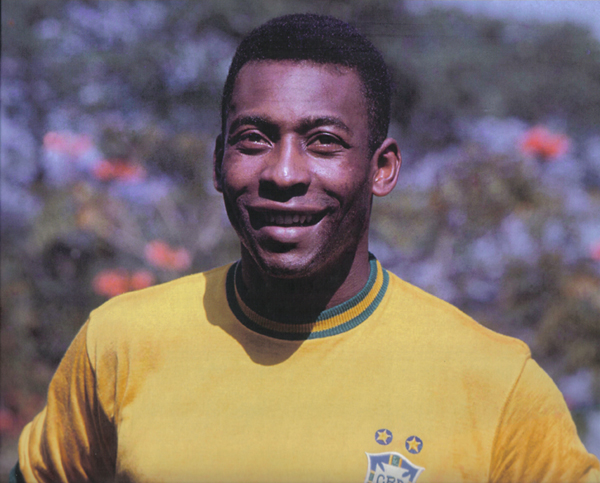
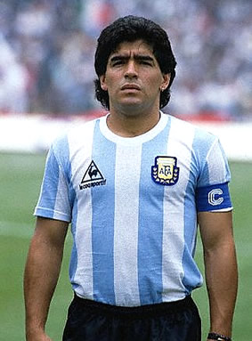

1.Pele: o mas llamado el rey del futbol ex-jugador de Brazil

2.Maradona: ex-jugador de la seleccion Argentina Ha sido la competencia de pele

3.Zinedine Zidane: Un muy buen ex-jugador de la seleccion francesa
Principal